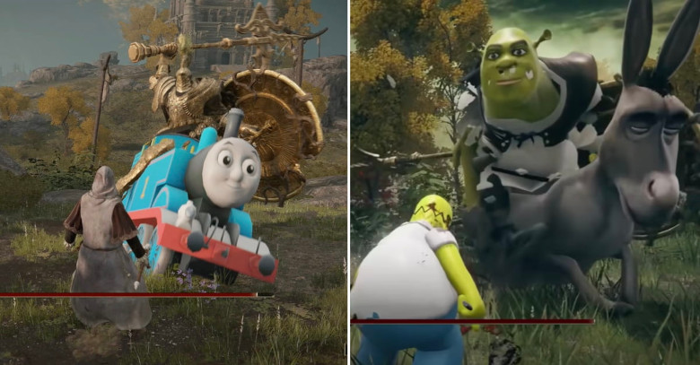
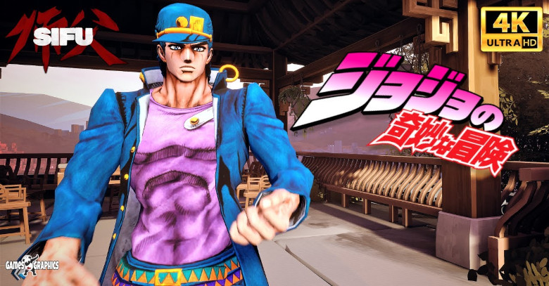
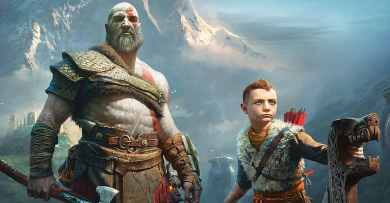
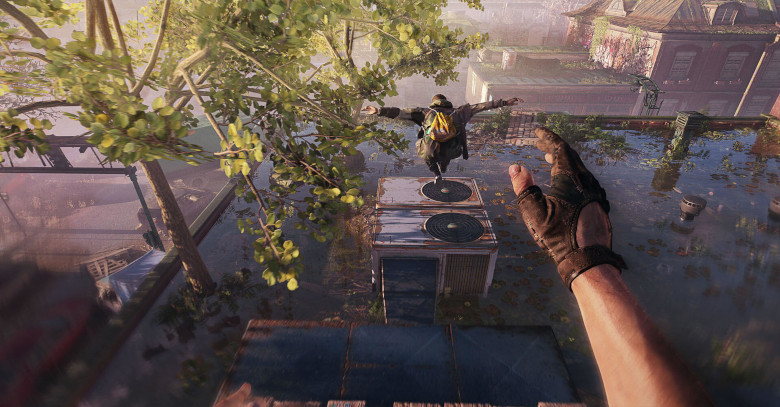

Mod de Elden Ring torna o jogo totalmente aberto para coop
Embora Elden Ring tenha facilitado bastante, ainda não acontece de forma livre. Esse novo mod permite que você com mais alguém jogue absolutamente o jogo inteiro juntos, indo até em lugares em que o jogo não permite.
Ver matéria completa

Mod de Elden Ring coloca frente a frente Homer Simpson e Shrek em luta frenética
A empresa ToastedShores compartilhou um vídeo de gameplay com Elden Ring com mods extremos que adicionam diversos personagens inusitados (alguns difíceis de compreender) e substitui por inimigos, npcs e animais desse mundo
Ver matéria completa

Mod para Sifu adiciona JoJo, Kratos, Master Chief e Spider-Man como personagens jogáveis
Hoje em dia, qualquer jogo que está disponível no PC e é fácil de fazer modificações, ganha mods de vários tipos e Sifu é o novo queridinho da comunidade de modders.
Ver matéria completa

Mod de God of War vai permitir controlar Atreus
O God of War já recebeu mods que alteravam os visuais de Kratos e traziam suporte à API Vulkan. No entanto, um novo projeto do modder Speclizer quer mudar a forma como o título é encarado, dando palco a Atreus, filho do protagonista que é controlado pela inteligência artificial na aventura original.
Ver matéria completaModders criam sistema de metrôs em Cyberpunk 2077
Nesta semana, o usuário NexusGuy999, do site NexusMods, compartilhou uma modificação do game chamada Metro System, que habilita um sistema completo de metrôs em Night City.
Ver matéria completaVeja Batman Arkham Knight rodando em 8K com ray tracing e mods
Nesta semana, um novo mod de Batman: Arkham Knight foi revelado trazendo melhorias como Ray Tracing, G.I. Neblina Volumétrica Dinâmica, Godrays, Camera Mod e resolução em 8K.
Ver matéria completa

Novo mod para Dying Light 2 abre a opção de jogar em terceira pessoa
Dying Light 2 foi lançado, sendo um jogo totalmente feito para ser jogado em primeira pessoa, mas se você joga no PC e quer brincar em terceira pessoa, já é possível, graças a um mod.
Ver matéria completaAlguém decidiu adicionar a Tia May como Homem-Aranha e o resultado é bizarro
Mas mesmo assim, um YouTuber conhecido como jedijosh920 fez algo bem estranho com Marvels Spider-Man do PS4. Ele simplesmente substituiu o cabeça de teia pela Tia May e o resultado é bizarro e bugado ao mesmo tempo.
Ver matéria completaCJ de GTA: San Andreas chega botando o terror em God of War
Em Janeiro deste ano, tivemos o lançamento de God of War e de costume, finalmente alguém decidiu trazer o personagem CJ para God of War, colocando o popular personagem no papel de Kratos.
Ver matéria completaMod VR é lançado oficialmente para Resident Evil 2 e 3 Remake
O mod VR que está em desenvolvimento desde de 2021 e ficou bastante popular em Agosto, mas agora o mod finalmente foi lançado oficialmente pelo Praydog, criador do mod.
Ver matéria completaThe Last of Us 2: Fã usa mod para alterar a história do game
Há 3 diasO jogo possui uma narrativa muito forte, onde alguns acontecimentos específicos ditam todo o resto da história e experiência do jogador. No entanto, um fã utilizou um mod para tentar mudar alguns episódios fatídicos do game.
Fonte: IGN BrasilAlguém decidiu transformar a demo do Matrix Awakens em um jogo do Superman
Há 3 diasConhecido como volod, ele utilizou a demo que conta com uma enorme cidade, para tentar recriar um tipo de Superman, que pode voar livremente pelo mapa.
Fonte: GamevicioWill Smith e Chris Rock se enfrentam novamente em God of War com esse mod bizarro
Há 3 diasO meme mais famoso atualmente é sobre o tapa que Will Smith deu no Chris Rock durante a premiação do Oscar, algo que literalmente entrou para história, pois tudo aconteceu ao vivo para o público.
Fonte: Gamevicio